5분 빠른 시작
박스 한 개를 실제 저장 라벨로 만드는 최소 절차입니다.
필요한 것
- 원본 이미지 폴더
- 별도 라벨 저장 폴더
- 클래스 이름 한 개 이상
성공한 상태
- 객체 목록에 박스가 보임
- 저장 필요가 사라짐
- 다시 열어도 박스가 복원됨
- 1 데이터셋 → 데이터셋 시작에서 목적을 객체 탐지로 선택합니다.
- 이미지 폴더와 새 저장 폴더를 각각 지정합니다.
- 2 라벨링으로 이동하고 클래스를 선택합니다.
- 캔버스 왼쪽 도구 레일에서 박스를 선택합니다.
- 객체를 감싸도록 드래그하고 클래스·크기를 확인합니다.
- 라벨 저장을 누르고 저장됨을 확인합니다.
다음 이미지로 이동했다가 돌아와도 박스가 다시 보이면 첫 라벨 저장이 끝났습니다.
화면 구성과 자동 맞춤
상단 단계, 왼쪽 작업, 중앙 캔버스, 오른쪽 이미지 큐를 기준으로 읽습니다.
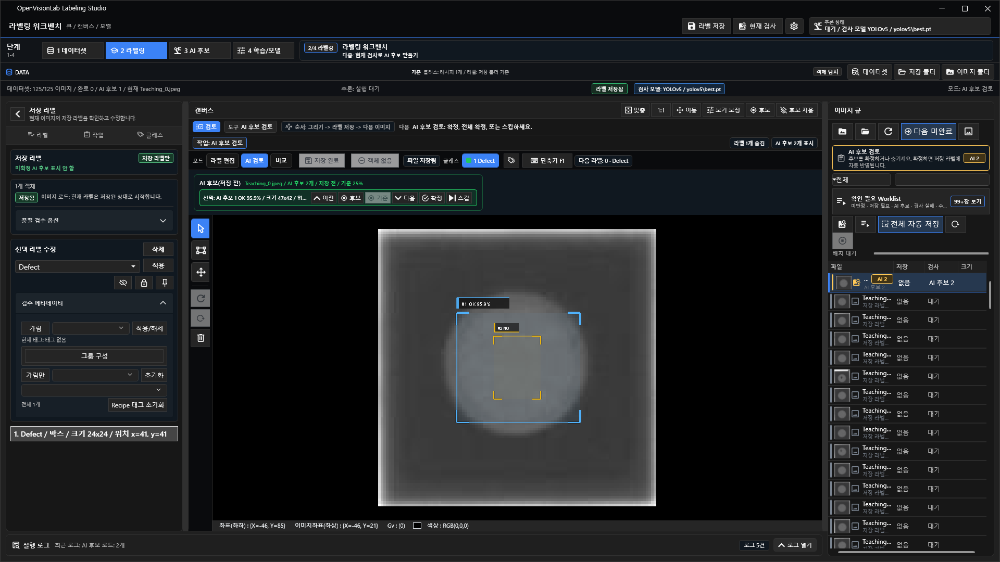
| 영역 | 무엇을 확인하나요? |
|---|---|
| 상단 | 현재 단계, 데이터셋 목적, 저장 상태, 현재 검사 모델 |
| 왼쪽 | 저장 라벨, 현재 작업, 클래스, AI 후보 또는 모델 설정 |
| 중앙 | 라벨 편집·AI 검토·비교 모드와 캔버스 도구 |
| 오른쪽 | 현재 파일, 판정, 저장 상태, Worklist |
캔버스가 새 영역에 자동으로 맞춰집니다. 작업자가 임의 확대·이동한 화면을 초기 맞춤으로 되돌릴 때만 맞춤을 사용합니다.
현재 제품은 다크 테마만 지원하며 테마 선택 메뉴는 숨겨져 있습니다.
데이터셋, 이미지 큐, 클래스
원본 이미지와 라벨 저장 위치를 분리하고 class id 순서를 확정합니다.
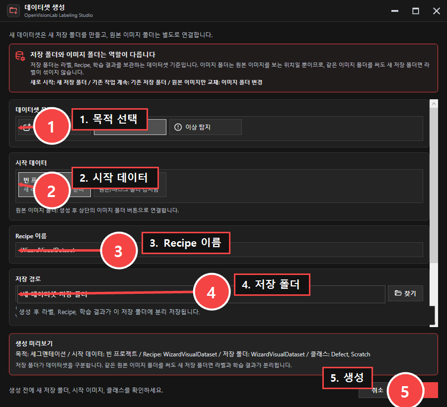
1 데이터셋 → 데이터셋 시작
- 작업 목적 선택
- 이미지 폴더 선택
- 저장 폴더 선택
- 클래스 이름과 순서 확인
확인 필요 Worklist
미판정, 저장 필요, AI 후보, 검사 실패, 수정 필요 이미지만 모읍니다. 현재 작업을 저장하면 다음 확인 필요 이미지로 이동합니다.
화면의 0, 1, 2 번호는 학습 class id입니다. 라벨링을 시작한 뒤에는 순서를 임의로 바꾸지 않습니다.
이전 라벨이 보일 때
객체탐지: 2점 드래그와 4점 극점
두 방식 모두 일반 축 정렬 Rectangle을 만들며 저장 흐름은 같습니다.
2점 드래그
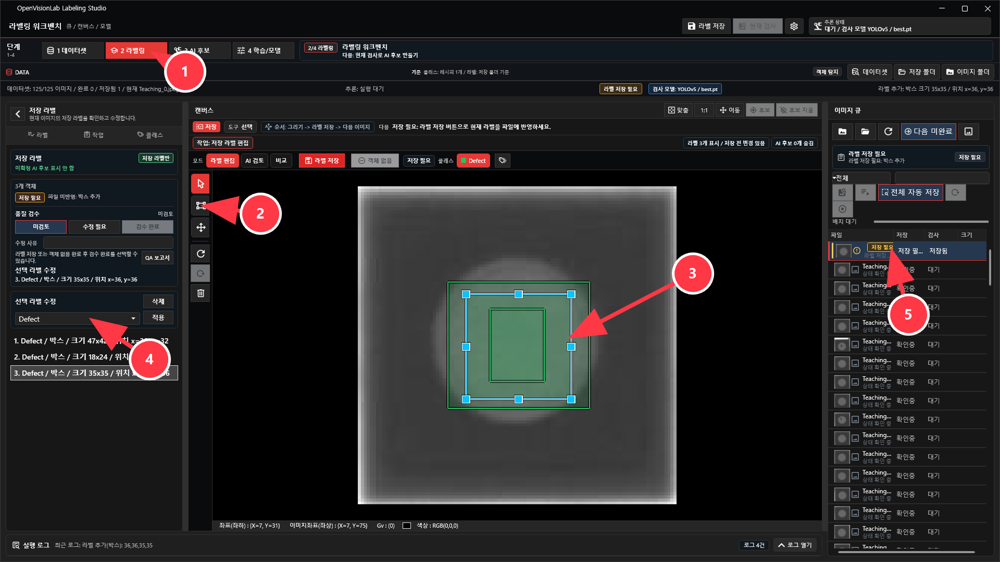
- 활성 클래스를 선택합니다.
- 박스 도구로 객체를 감쌉니다.
- 이동·크기 조절·클래스 적용으로 수정합니다.
- 라벨 저장을 누릅니다.
4점 극점
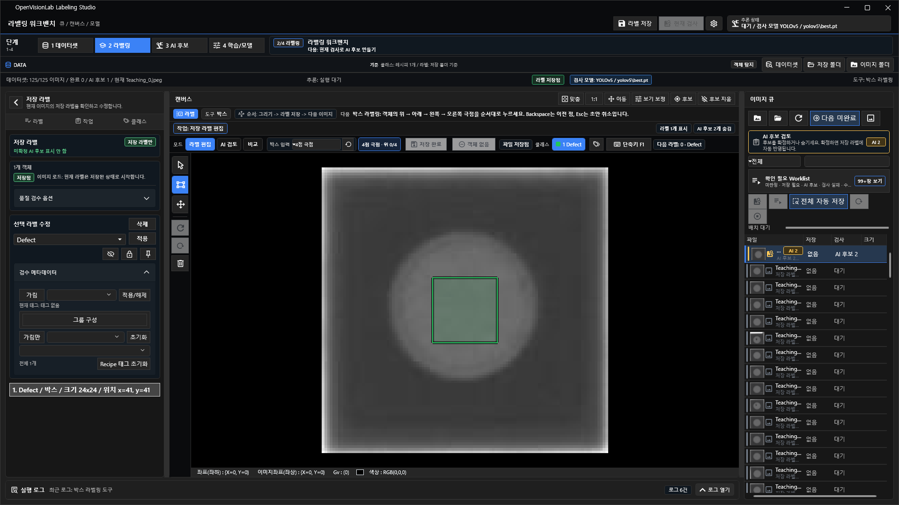
- 라벨링 옵션 → 박스 입력 → 4점 극점을 선택합니다.
- 위 → 아래 → 왼쪽 → 오른쪽 극점을 누릅니다.
- 네 번째 점에서 박스 한 개가 만들어졌는지 확인합니다.
- 검토 후 저장합니다.
Backspace는 마지막 점, Esc 또는 마우스 오른쪽 버튼은 진행 중 입력 전체를 취소합니다.4점 극점은 자유 사각형·회전 박스가 아닙니다. 지원하지 않는 회전 입력은 가져오기에서 건너뛰거나 적용을 차단합니다.
세그멘테이션과 Smart Mask
정확한 외곽선을 수동으로 만들거나 사각형 프롬프트로 자동 후보를 생성합니다.
수동 폴리곤·브러시·지우개
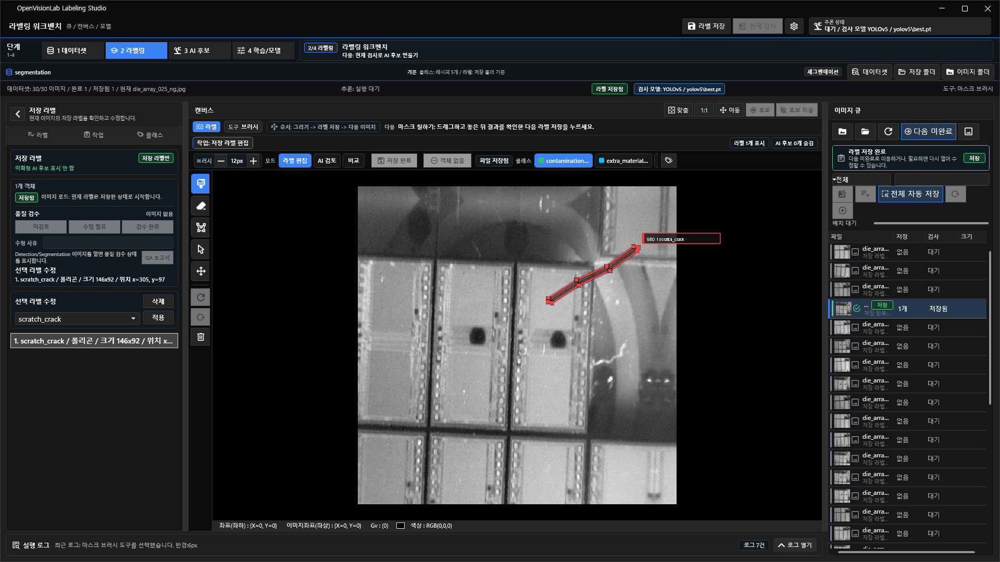
- 목적을 세그멘테이션으로 선택합니다.
- 폴리곤 또는 브러시로 결함을 표시합니다.
- 지우개·이동·객체 선택으로 수정합니다.
- 객체 목록과 캔버스를 확인하고 저장합니다.
Smart Mask 자동 윤곽
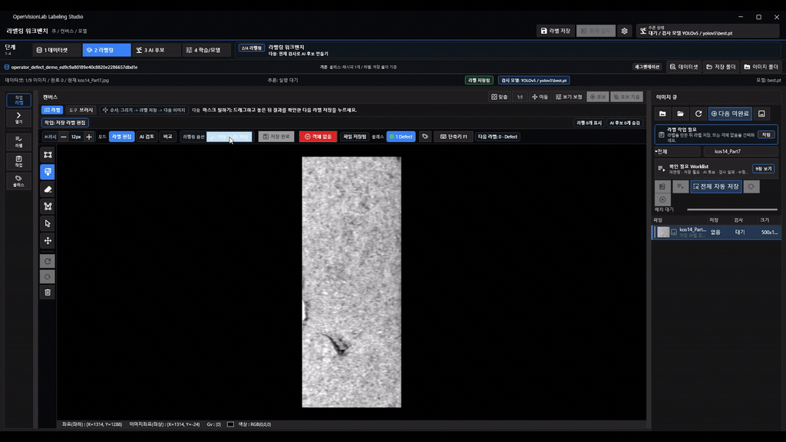
- 라벨링 옵션 → 자동 윤곽을 켭니다.
- 결함을 감싸는 사각형을 그립니다.
- 포함점 또는 제외점을 한 번에 하나씩 추가합니다.
- 후보 다시 생성 후 이전 후보 보기와 현재 후보 보기를 비교합니다.
- 더 나은 후보를 표시하고 확정 또는 스킵합니다.
후보 생성과 비교만으로 정답 파일은 바뀌지 않습니다. 확정 뒤 다시 편집했다면 라벨 저장을 누릅니다.
이상 탐지: 이미지 판정과 위치 근거
YOLO 분류는 이미지 전체 OK/NG, PatchCore는 정상 전용 학습과 검토용 히트맵을 제공합니다.
YOLO8/YOLO11 이미지 분류
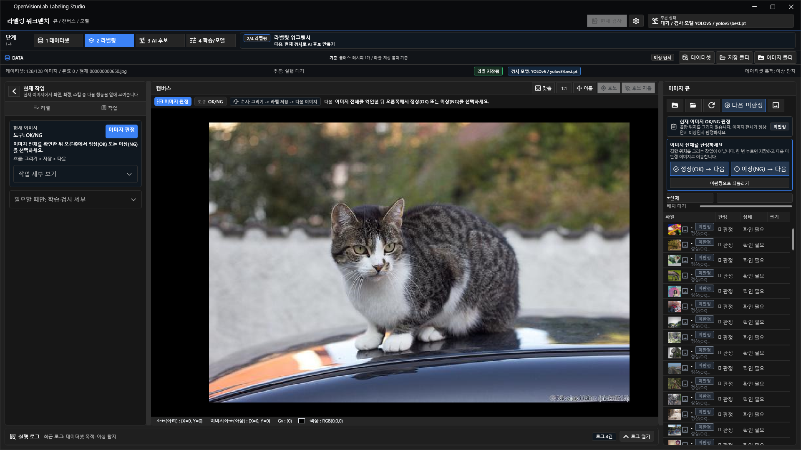
- 폴더명 제안을 확인하되 확실할 때만 사용합니다.
- 정상(OK) → 다음 또는 이상(NG) → 다음을 누릅니다.
- 오류는 미판정으로 되돌리기 후 다시 선택합니다.
PatchCore
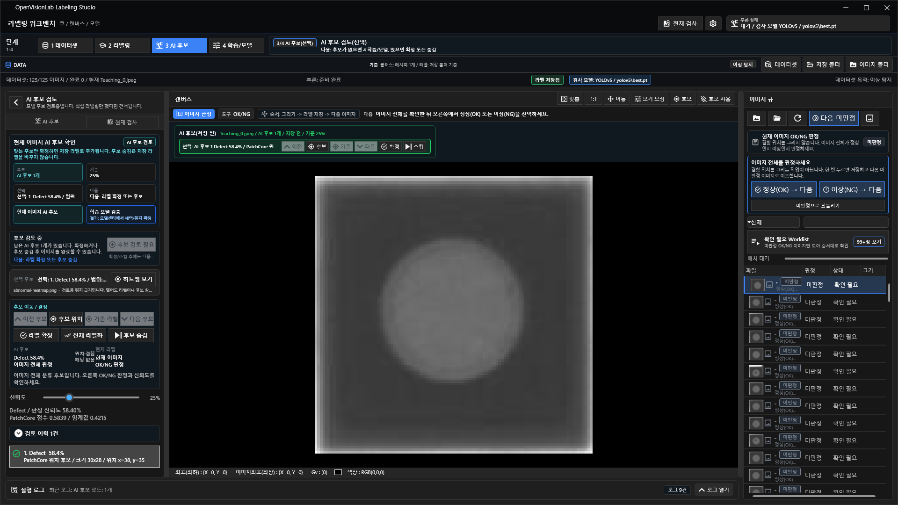
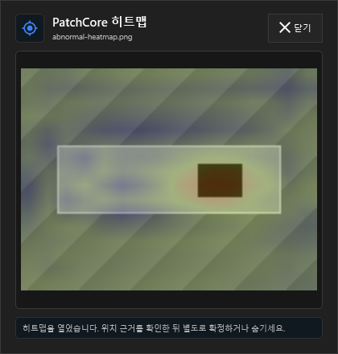
- 검토 완료된 정상 train과 정상 valid 이미지를 준비합니다.
- PatchCore 프로필로 학습하고 임계값 경고를 확인합니다.
- 현재 검사를 실행해 이미지 판정·점수·임계값을 봅니다.
- 히트맵을 명시적으로 열고 작업자가 후속 판정을 결정합니다.
히트맵 위치는 자동 정답 라벨이 아니며 현장 정확도는 독립 데이터 검증 전까지 주장하지 않습니다.
저장 라벨, AI 후보, 객체 메타데이터
정답과 모델 제안을 구분하고 가림·Recipe 태그·동일 이미지 그룹을 저장합니다.
| 상태 | 의미 | 해야 할 일 |
|---|---|---|
| 저장 필요 | 메모리 편집만 있음 | 라벨 저장 |
| 저장 라벨 | 학습에 사용할 사람 승인 정답 | 검수 또는 편집 |
| AI 후보 | 현재 모델의 제안 | 확정·숨김·수정 |
| 수정 필요 | 검수 오류와 사유가 있음 | Worklist에서 수정 |
| 검수 완료 | 저장 라벨을 현재 기준으로 승인 | 다음 이미지 |
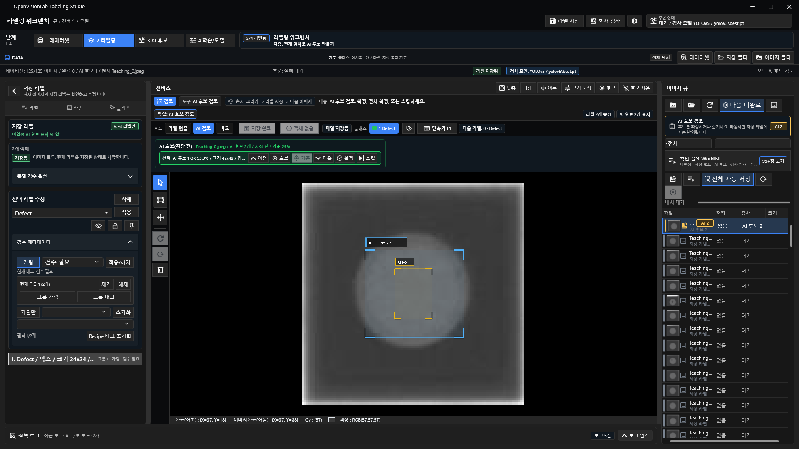
- 저장 라벨에서 객체를 선택합니다.
- 필요하면 가림과 Recipe 태그를 적용합니다.
- 필터로 필요한 객체만 확인합니다.
- 둘 이상의 관련 객체를 선택해 그룹 구성을 누릅니다.
- 라벨 저장을 눌러 메타데이터도 저장합니다.
형상 병합, 함께 이동, 이미지 간 추적 또는 학습 그룹이 아닙니다. 객체당 한 그룹만 가질 수 있습니다.
Dataset Health
저장 데이터를 바꾸지 않고 split, 문제, 클래스 분포, 시각 QA를 점검합니다.
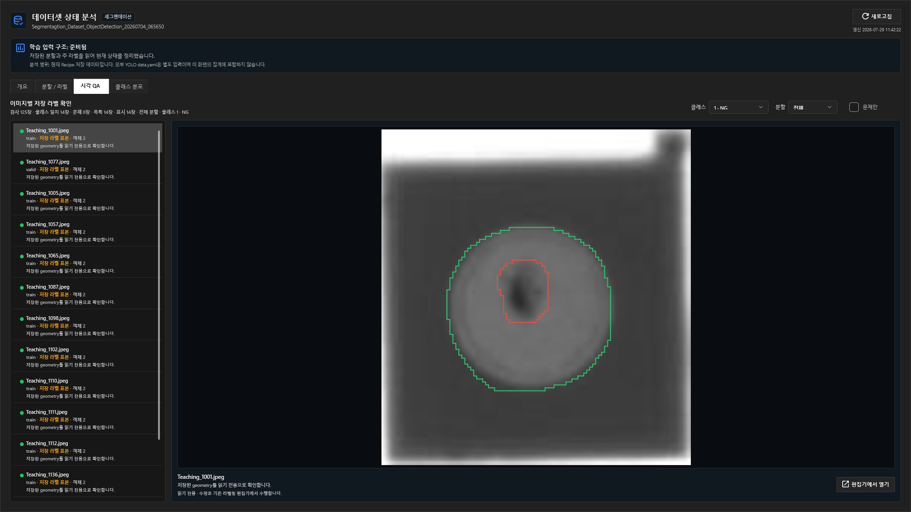
- 4 학습/모델 → 데이터 → 데이터셋 상태 분석을 엽니다.
- 개요와 분할/라벨 탭을 확인합니다.
- 시각 QA에서 클래스·split·문제만 필터를 조합합니다.
- 필요한 행을 편집기에서 열어 수정합니다.
- 클래스 분포를 확인합니다.
필터와 새로고침은 읽기 전용이며 라벨·split·클래스·Recipe를 바꾸지 않습니다.
목록이 비어 있을 때
템플릿, 일괄 작업, 데이터 교환
반복 작업을 빠르게 시작하되 적용 전 미리보기와 적용 후 검수를 유지합니다.

템플릿
- 대표 이미지 라벨 확인
- 객체와 대상 범위 선택
- 미리보기
- 적용 후 각 이미지 검수
데이터 교환
- 형식과 경로 선택
- Dry Run/미리보기
- 건너뛴 항목과 이유 확인
- 명시적으로 적용
지원하지 않는 회전 박스는 축 정렬 박스로 조용히 변환하지 않습니다.
학습, 모델 비교, 현재 검사
학습 완료와 모델 채택을 분리하고 같은 평가 조건으로 비교합니다.
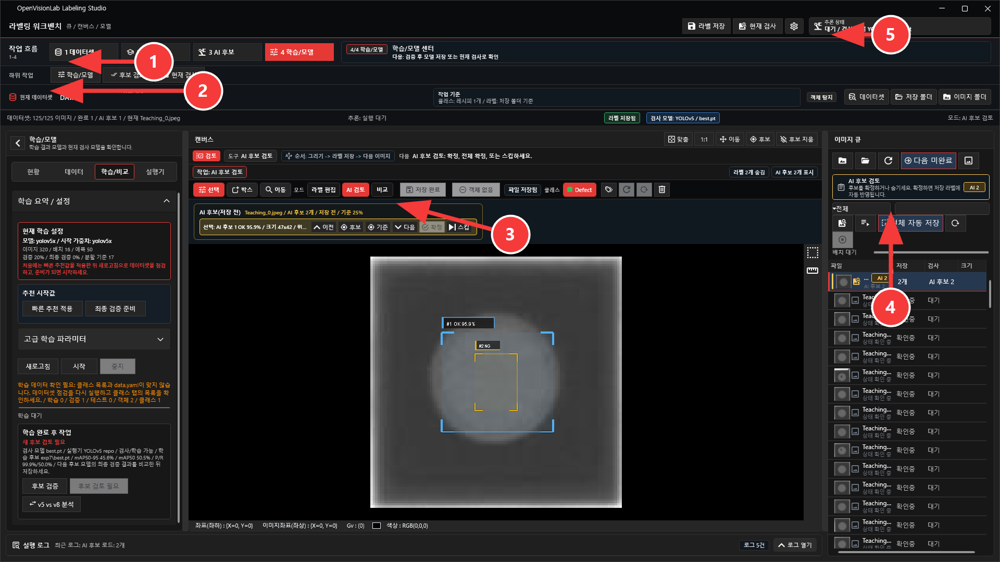
| 목적 | 지원 흐름 |
|---|---|
| 객체 탐지 | YOLOv5, YOLOv8, YOLO11 detect |
| 세그멘테이션 | YOLOv8/YOLO11 segment, U-Net |
| 이상 탐지 | YOLO8/YOLO11 classify, PatchCore normal-only |
- Dataset Health와 split을 확인합니다.
- 모델 프로필과 시작 가중치, 실행기 self-test를 확인합니다.
- 학습 후 새 best.pt를 후보 모델로 확인합니다.
- 같은 test split·클래스·이미지 크기·임계값으로 비교합니다.
- 근거가 충분할 때만 현재 검사 모델로 채택합니다.
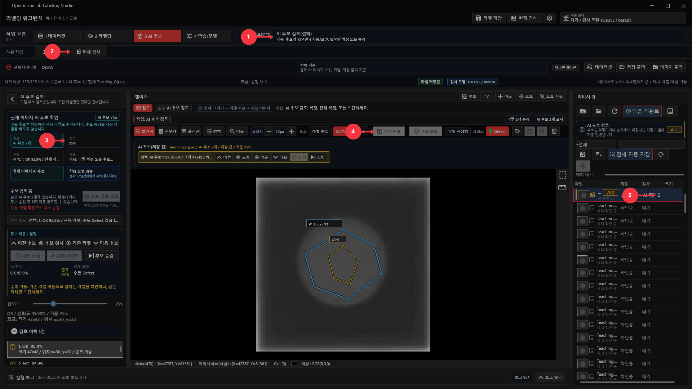
학습이 끝나도 현재 검사 모델은 자동으로 바뀌지 않습니다. 독립 test 근거를 확인하고 명시적으로 채택합니다.
프로젝트 보관, 편집 복구, 진단
작업 이동과 장애 대응을 명시적인 사용자 동작으로 수행합니다.
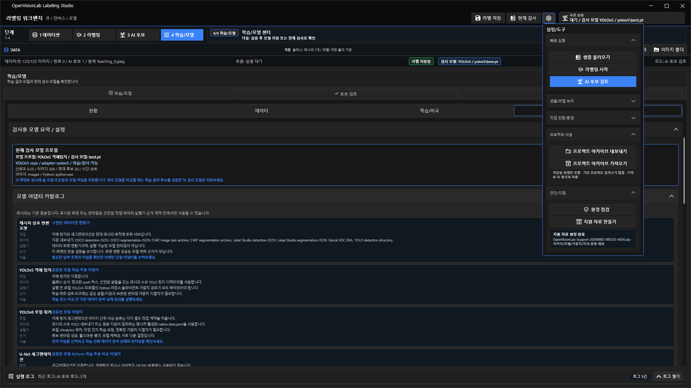
프로젝트 아카이브
- 저장된 Recipe와 전체 데이터셋을 해시 목록과 함께 내보냄
- 가져올 때 기존 프로젝트를 덮어쓰지 않음
- 가져온 Recipe는 확인 후 명시적으로 적용
환경·지원
- 환경 점검으로 실행기·경로·그래픽 기능 확인
- 지원 자료는 사용자가 명시적으로 생성
- 허용 목록과 가림 처리 적용
비정상 종료 편집 복구
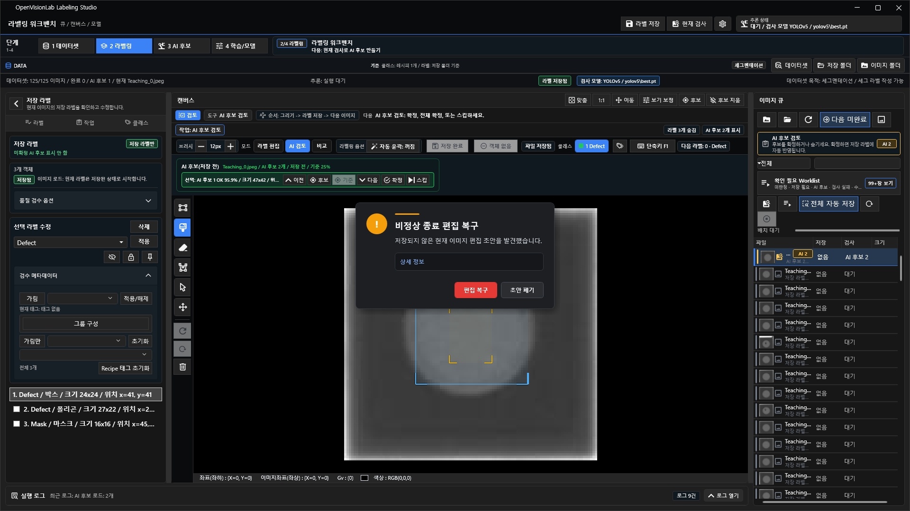
한 개의 현재 이미지 편집 초안만 복구합니다. 여러 이미지 자동 저장이나 AI 후보 확정 기능이 아닙니다.
문제 해결
증상부터 원인 후보와 확인 순서를 좁힙니다.
| 증상 | 확인 순서 |
|---|---|
| 이전 라벨이 보임 | 상단 저장 폴더 → 새 실험이면 새 저장 폴더 |
| 다음 이미지에서 라벨이 없음 | 이전 이미지 → 저장 필요 → 라벨 저장 |
| 라벨링 도구가 없음 | 데이터셋 목적 → 2 라벨링 단계 |
| Smart Mask 비활성 | 세그멘테이션 → 현재 이미지 → 자동 윤곽 → MobileSAM 상태 |
| Dataset Health가 비어 있음 | data.yaml과 저장 구조 → 전체 필터 → 새로고침 |
| PatchCore 히트맵 오류 | 안내 확인 → 현재 검사 다시 실행 → 새 후보 선택 |
| 학습 버튼 비활성 | 데이터 오류 → 실행기 self-test → 모델 프로필 |
| 학습 뒤 모델이 그대로 | 후보와 현재 모델 비교 → 명시적 모델 채택 |
| 이미지 열기 전 그래픽 오류 | 환경 점검 → GPU 드라이버·실제 콘솔 → 지원 자료 |
작업 종료 체크리스트
저장과 검토가 실제로 끝났는지 마지막으로 확인합니다.
라벨링 종료 전
- 저장 필요 0건
- AI 후보와 저장 라벨 구분
- 클래스 이름과 번호 확인
- 수정 필요·검수 완료 확인
학습 전
- Dataset Health 확인
- split과 독립 test 확인
- 프로필과 시작 가중치 확인
- 실행기 self-test 확인
모델 채택 전
- 같은 평가 조건
- 놓침·과검출·클래스 오류
- PatchCore 점수·임계값·히트맵
- 명시적 현재 모델 채택
앱 종료 전
- 미확정 후보 확인
- 중요 프로젝트 아카이브
- 오류 시 환경 점검
- 필요 시 지원 자료 생성